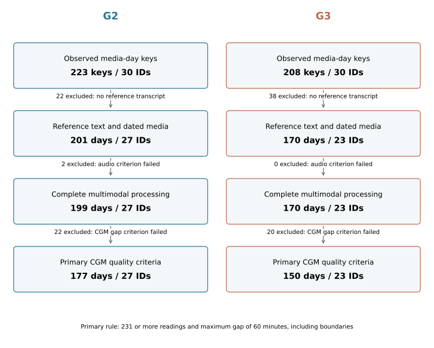
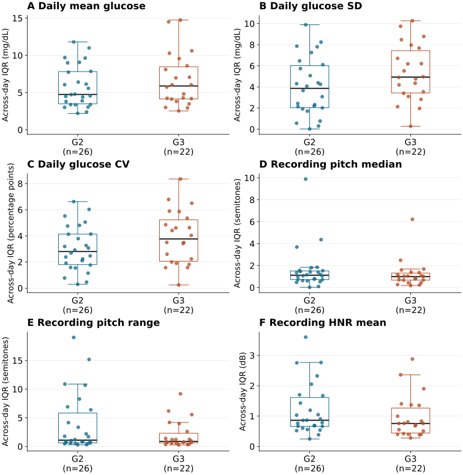

Measure glucose
Repeated CGM observations provide a sensor record. All glucose values are expressed in mg/dL.
A documented research resource
Glucose records.
Everyday context.
Continuous glucose monitoring, daily video diaries, and postvisit interviews from three studies at the University of Southern California. Explore what is available, how records connect, and what they can support.
Source snapshot: Documentation v1.0.0
Illustration only. Shared dates do not establish synchronized events.
These counts describe different data layers. Wave-specific identifiers are not established as distinct people across studies; observed availability is not recruitment completion or recording adherence.
01 / DATASET
The resource connects sensor records with participants’ accounts of CGM use, food, activities, and everyday experiences. Study designs and represented cohorts differ.
| Resource characteristic | G1 | G2 | G3 |
|---|---|---|---|
| Recruitment context | Adult community health workers | Adult community health workers | Community-dwelling adults aged ≥35 |
| Documented CGM schedule | 20 unmasked days | 10 masked + 10 unmasked days | 10 masked + 10 unmasked days |
| Clinical-table records | 20 | 30 | 24 |
| Raw CGM observations | 105,361 | 157,363 | 138,223 |
| Daily media files | 533 | 402 | 374 |
| Postvisit media files | 18 | 33 | 27 |
| Observed daily keys | 335 | 223 | 208 |
Daily keys use calendar dates in G1 and filename study-day labels in G2/G3. Protocol schedules describe intended collection, not verified wear time. Clinical tables, media, and registry enrollment have separate denominators.
Repeated CGM observations provide a sensor record. All glucose values are expressed in mg/dL.
Smartphone diaries capture accounts prompted by CGM feedback and study questions.
Semistructured interviews document experiences with monitoring and everyday activities.
02 / ANALYSIS EXAMPLES
Descriptive demonstrations make selection and processing choices visible. These results characterize available records; they do not establish clinical prediction or cross-modal associations.
Daily CGM quality criteria retained 327 of 369 complete paired diary dates while retaining all 50 represented wave-specific identifiers.
Primary rule: at least 231 unique valid readings and a maximum gap of 60 minutes, including day boundaries. These are analyst-defined rules.
Open selection figure

CGM and acoustic summaries can be described on the same eligible dates. Across-day IQRs require at least two dates, leaving 48 identifiers in this display.
Language provenance. Original-versus-translated status remains undocumented for 361 of 371 candidate text days.
Time alignment. Shared calendar dates do not establish synchronized clocks or event-level correspondence.
Measurement validity. Finite acoustic features and accepted face detections do not establish validated psychological, clinical, or facial measurements.
03 / UNDERSTAND THE DATA
What each field means.
A field is a column in a data file: a glucose reading, a timestamp, or a transcript, for example. This guide explains each column and where to find it.
203 field entries across 23 source files. A name can appear in more than one file or study wave. These are definitions, not participant records.
Choose a group to browse its fields.
Glucose units are confirmed as mg/dL. In G3, the Clarity glucose column was renamed to sensorglucose without numerical conversion. This confirmation does not establish device versions or clock synchronization.
04 / ACCESS & PROJECT
Requests are restricted to applicants affiliated with academic institutions. Contact Professor David Black to discuss the proposed use and applicable access conditions.
Contact Prof. David BlackPROJECT INFORMATION
Huang-Cheng Chou · Bowen Yi · Nicholas Arce · Vu My · Ruth A Flores Cambara · Shrikanth Narayanan · David Black
Viterbi School of Engineering and Keck School of Medicine
University of Southern California